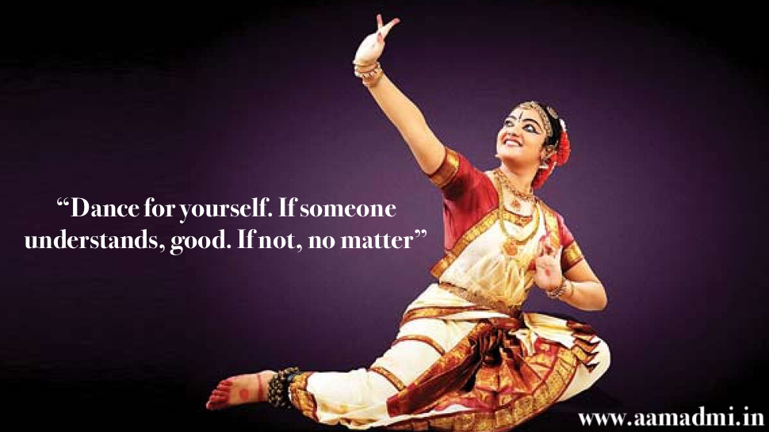

The Dance Academy, established since October 1988 aims to provide students with a professional dance curriculum exposing them to well structured training programmes in the various dance disciplines. Students are encouraged to develop their dance skills and performance qualities to the maximum.
Students in classical ballet, girls and boys, can enroll as of the age of three years. The school follows the Royal Academy of Dance London Syllabus.
At the tender age of three, classes are structured with a 'recreational' focus. Here the importance of 'fun' and 'imagination' are the essential elements of the class. From the age of six, students begin to follow the well structured graded syllabus of the Royal Academy of Dance. Throughout the graded syllabus students are introduced to 'Free Movement' and 'Character.'

The Dance Academy's firm belief that 'Dancing is fun' and 'healthy' is greatly witnessed by the variety of disciplines taught in the school for all ages. The 'fun' component is instrumental in nurturing in the students a passion for dance.The professional staff play a vital role in fostering the 'fun' element in their instruction. This cultivates in the student an appreciation of dance,in its many forms, and its performance. It also encourages the student to develop poise and self confidence as well as developing an awareness of fitness, - the 'healthy' aspect of dance.